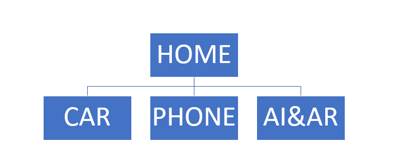
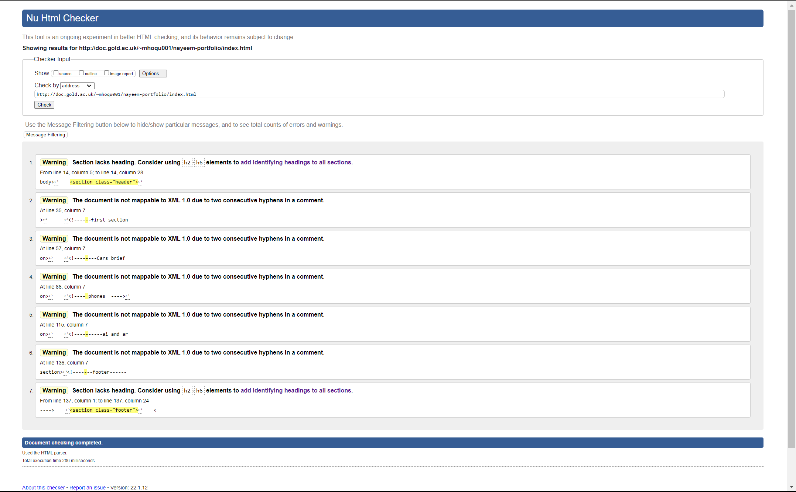
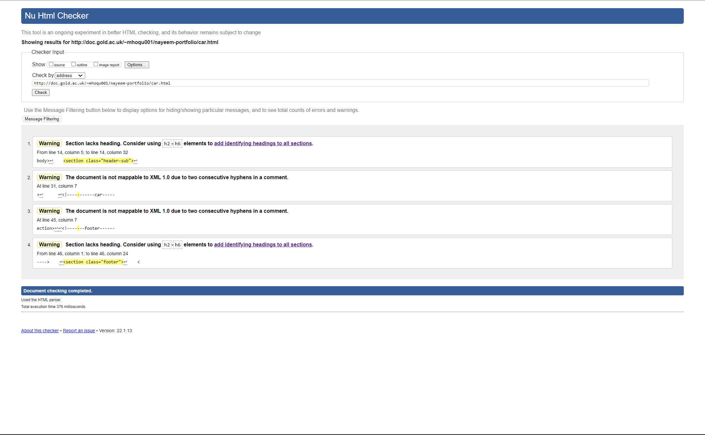
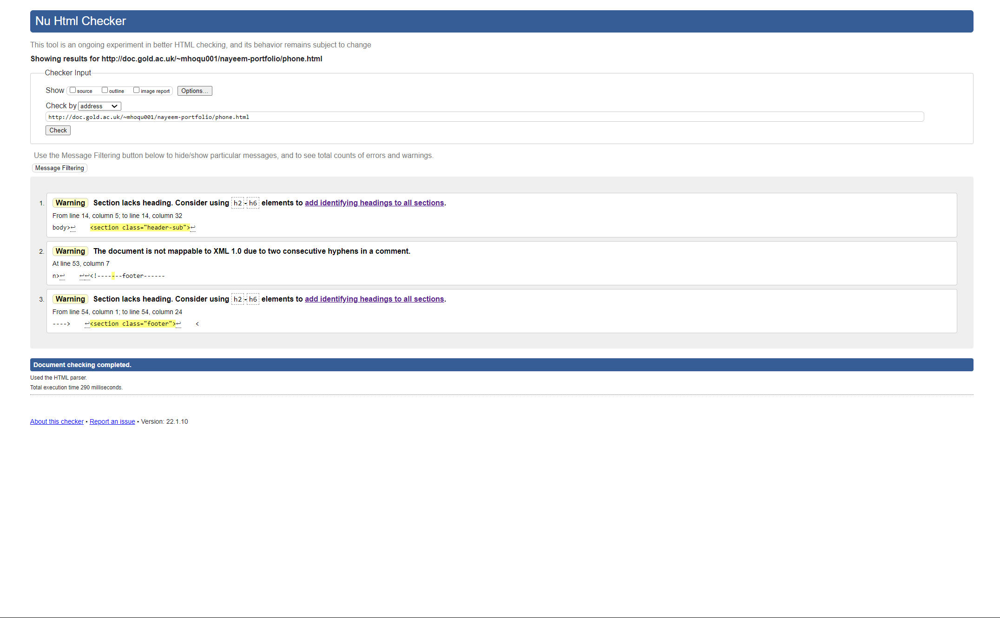
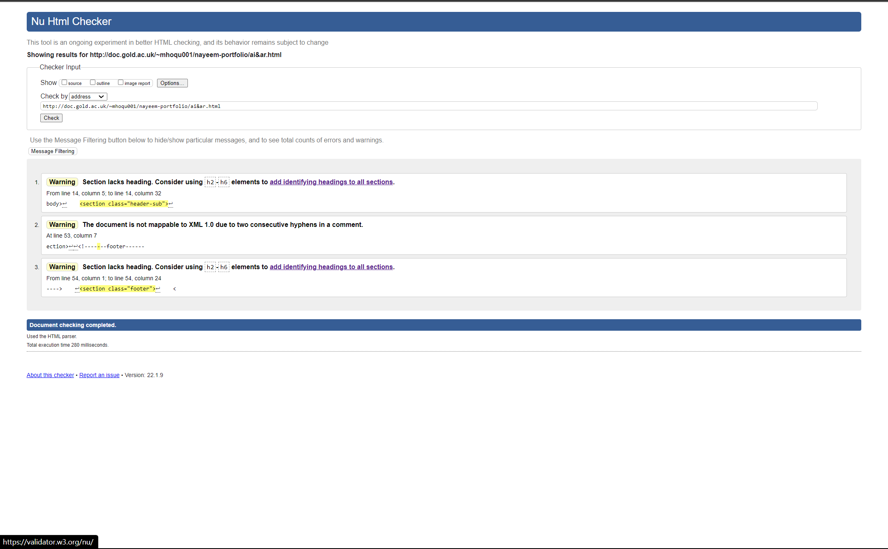

Introduction
How did you approach the subject? What does your site say about future you?
This portfolio highlights my interest in the future of technology. Particularly, the future of cars, phones, artificial intelligence and augmented reality.
Background
Who is your audience?
Anyone can understand how to use my site as it is simple, but my site is a portfolio of my personal interests in technology which may not interest whose who are not interested in technology.
- Portfolio 1 (and thoughts about it)
- Portfolio 2 (and thoughts about it)
- Portfolio 3 (and thoughts about it)
Ronaldo portfolio
There is a lot of information about him on his football abilities.The user innterface and design looks very nice and sticks with an overall theme. The use of fave based animations were very nice.
Elon Musk portfolio
Very detailed information about him. The design was consistant and nice. There could have been more pictures to go along with the text.
Dwayne Johnson portfolio
Great amount of information as well as a good amount of pictures used. The media queries work well. Some aspects look basic and bland, could have added CSS styles and java animations.
Resource on portfolio creation
Planning
- Accessibility aspect 1
- Accessibility aspect 2
- Accessibility aspect 3
I plan on using alternative text for images if browsers cannot load them and for visually impaired users.
Colours will be bright and large so it is easy to see and read for everyone.
Sound effects will not be present as I plan on giving the same experience to everyone. If a video were to be used, I would implement captions.
How have you made the site easy to navigate?
My site is mainly scroll based which is the easiest form of navigation. The website is ideal for desktops and mobile platforms with the help of media queries, content is not squashed but small enough to retain its design.
Implementation
Learning
Libraries and other resources
I have used the google font library and fontawesome bootstrap to get fonts and icons for my werbsite.
Evaluation
What worked well
- Overall, the website is nice simple and responsive. I really like the design and layout. Navigation looks nice and CSS responsive behaviour is good. I have added a few accessibility for visually impaired users.
What might be improved
- Maybe I could have added more features such as fancy graphics and animations. I also could have added more content in my website. Some more accessibility features that I planned should have been added.
References
Google Fonts. n.d. Google Fonts. [online] Available at:
Bootstrapcdn.com. n.d. Font Awesome. [online] Available at:
Gandy, D., n.d. fa-times-circle: Font Awesome Icons. [online] Fontawesome.com. Available at:
Gandy, D., n.d. fa-bars: Font Awesome Icons. [online] Fontawesome.com. Available at:
Img.reality.news. n.d. [online] Available at:
Roboticsbusinessreview.com. n.d. [online] Available at:
Mobidev.biz. n.d. [online] Available at:
Assets.markallengroup.com. n.d. [online] Available at:
Miro.medium.com. n.d. [online] Available at:
Dignited.com. n.d. [online] Available at:
Assets.hongkiat.com. n.d. [online] Available at:
Appendix
Site Map
Wireframes
low fidelity home page

low fidelity car page

low fidelity phone page

low fidelity ai and ar page

high fidelity home page

high fidelity car page

high fidelity phone page

high fidelity ai and ar page

Validator reports
Home page validation
car page validation
phone page validation
ai and ar page validation
